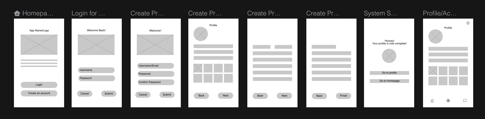
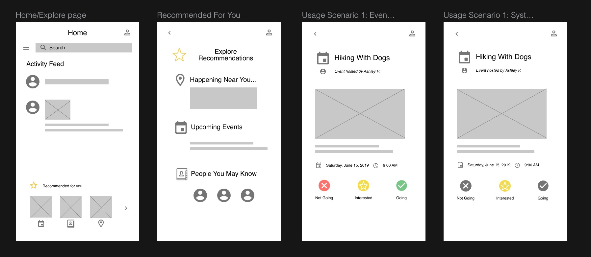
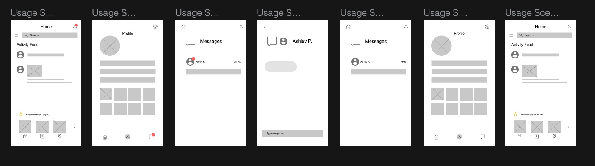
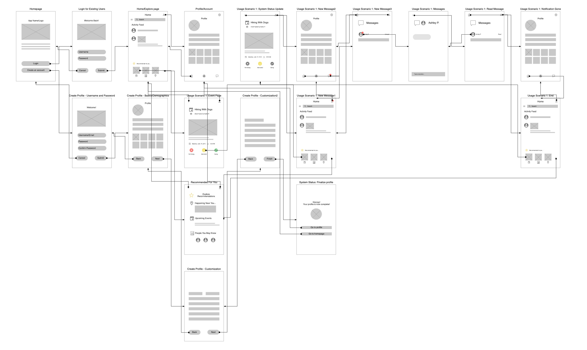
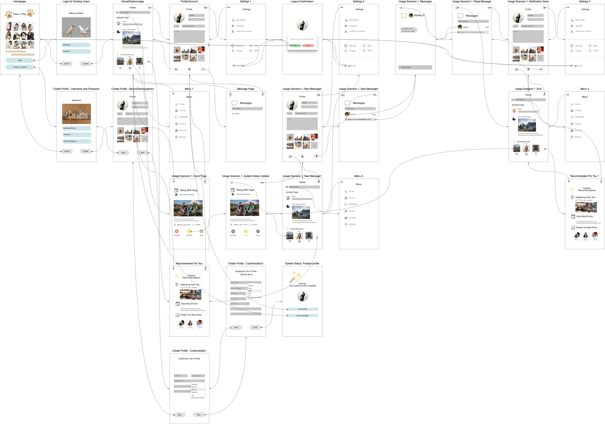

persona & scenario
Below you can explore a persona created for this project, as well as two usage scenarios that detail what the app can be used for and how such goals can be achieved.
wireframes
The following wireframes were developed using InVision. These wireframes detail the design process of screen structures within the app.
Login for existing users/Create new account >>> Customize Profile >>> Profile Page

Homepage >>> Explore Recommendations >>> Event RSVP

Messaging Feature

interaction wireflow
The following wireflow diagrams were developed in InVision and exported via Draw.io
The low-fidelity diagram documents the basic flow of interaction when certain features and buttons are selected in the app.
The high-fidelity diagram involves updated graphics and incorporates a more comprehensive and sequential flow of interaction within the app.
Low-fidelity Wireflow Diagram

High-fidelity Wireflow Diagram
